User:Renata
Currently on hiatus from RO since October 2018.
"I don't know everything. I just know what I know."
"Needs more testing."
About
Contributor for NovaRO Wiki. Player Support for English- and Indonesian-speaking players. Reno#2186 on Discord, Renata in-game and in the forums. I'm on GMT +0.
I've been playing RO since Turtle Island came out around 2003-2004; Renewal since 2012-2013; NovaRO since December 2014.
My main character is an Archbishop. I mostly play magic, ranged, and semi-magic classes (Acolyte-, Mage-, and Archer-based classes, Genetic, Oboro). I have rudimentary knowledge about physical classes but some of them (e.g. Guillotine Cross, Rune Knight, Mechanic, Rebellion) are practically a mystery to me.
I am generally capable of entertaining all sorts of NovaRO-related questions in Discord, in-game, or in the forums. I don't specialize in any particular topic on RO, although I'm more familiar with the PvE/PvM aspect of the game. If you can't find the answer in the FAQ or from Google, you can probably get it from me. If I don't have the answer, I can help you find it or get you slightly closer to it at least.
This is how I make my contributions for the wiki.
Works & WIPs
- Getting Started has been successfully ported to the Wiki.
- Monster Hunter has been ported and adapted to the Wiki, with additional information. Deserted Island instance and Octopus Prince added to the Wiki.
- Player Commands page added.
- Created the Instance Dungeons page
- The FAQ has been separated into:
- Getting Started for general questions related to leveling, gearing up, and farming.
- FAQ: Homunculus and Azzy AI Tutorial
- FAQ: PVP, BG, War of Emperium, and Guild Dungeon Investment System
- Full Support and Exorcist Arch Bishop Guides mostly completed.
- Introduction to NovaRO mostly completed. Getting Started updated and cleaned up.
AB Gear Cheat Sheet
I've had people ask what my AB wears for Adoramus and other builds. I figure it'd be easier to make a table listing gears that I usually/plan to equip, and refer people here.
| Build / Gears | Adoramus | Magnus Exorcismus | Judex | VS Enemies that cast Freezing, Stone Curse, SP Drain | Healer | BG/WoE |
|---|---|---|---|---|---|---|
| Top Headgear | +4 Celine Ribbon + Weakened Fenrir
+7 Drooping Neko Crew + Weakened Fenrir |
+4 Shrine Maiden Ribbon | Wickebine's Black Cat Ears | W Doll Hat of Stability + Gemini-S58 | +6 Chibi Pope + Parus | Feather Beret |
| Mid Headgear | Monocle + Weakened Fenrir/Uzhas | Monocle + Weakened Fenrir/Uzhas | Monocle + Weakened Fenrir | Monocle + Gemini-S58 | Blush + Parus | Blush of Groom |
| Lower Headgear | Rainbow Scarf | Rainbow Scarf | Rainbow Scarf | Rainbow Scarf | Rainbow Scarf | Gentleman's Pipe |
| Armor | Robe of Judgement | +7 Flattery Robe + Agile Nive 2 + Spellbound Nive 2 + Agav
Geffen Magic Robe + Agav +8 Hero Judgement Shawl Robe of Judgement (DEX +11) |
+7 Flattery Robe + Agile Nive 2 + Spellbound Nive 2 + Agav
+8 Hero Judgement Shawl |
Flattery Robe + Evil Druid
+7 Excellion Suit + Frozen Supplement + INT Supplement + Magic Supplement |
Diabolus Robe + Dame of Sentinel
+7 Excellion Suit + Frozen Supplement + INT Supplement + Magic Supplement |
+6 WoE Robe + Marc |
| Weapon | Mace of Judgement + Big Ben + Nightmare Mimic | +12 Evil Slayer Vanquisher Staff + Big Ben/Nightmare Mimic
+15 Crimson Rod + Big Ben/Nightmare Mimic |
+9 Vicious Mind Book
+8 Ledger of Death + Big Ben/Nightmare Mimic +15 Crimson Bible + Big Ben/Nightmare Mimic |
Adjust as needed | +8 Glorious Cure Wand | Long Mace
+6 Vellum Bible Mace + four EOE VIT 3 |
| Shield | Mad Bunny + Neo Punk/Nightmare Arclouse | Mad Bunny + Neo Punk/Nightmare Arclouse | Mad Bunny + Neo Punk/Nightmare Arclouse | Valkyrja's Shield + Medusa | Bible of Promise Vol. 2
Platinum Shield Valkyrja's Shield + Hodremlin +9 Immune Shield + Khalitzburg Knight |
Valkyrja's Shield + Thara Frog |
| Garment | Shawl of Judgement | +9 Heroic Backpack + Marsh Arclouse
Shawl of Judgement (DEX +11) |
+9 Heroic Backpack + Marsh Arclouse | +7 Excellion Wing + Recovery 202 + Magic Supplement + Magic Supplement | +9 Giant Snake Skin + Spec DEX + VIT +7 + DEX +7
+7 Excellion Wing + Recovery 202 + Magic Supplement + Magic Supplement |
WoE Muffler + Noxious/Raydric/Randel |
| Footgear | Shoes of Judgement | +6 Temporal Boots of DEX + Spell9 + Reckless Magic + Licheni
Shoes of Judgement (DEX +4, MDEF +6) |
+6 Temporal Boots of DEX + Spell9 + Reckless Magic + Licheni | Temporal Boots of DEX + Merman/Eggyra/Gold Acidus | +6 Temporal Boots of DEX + Spell9 + Reckless Magic + Licheni | WoE Shoes + Green Ferus |
| Accessory 1 | Magic Intensifier Ring + MATK +3% + Headless Mule | Magic Intensifier Ring + MATK +3% + Headless Mule | Magic Intensifier Ring + MATK +3% + Headless Mule | Adjust as needed | Light of Cure + Cure Lv 1 | Glorious Ring |
| Accessory 2 | Pendant of Maelstrom + Headless Mule | Pendant of Maelstrom + Headless Mule
Sheriff's Right Badge + Phen |
Pendant of Maelstrom + Headless Mule | Adjust as needed | Diabolus Ring + Phen | Black Rosary + Smokie |
Stacking MDEF on Judgement Set
This is mainly for Adoramus AB who has to deal with enemies that can inflict Frozen and/or Stone Curse, and when other resistance/immunity gears or skills (like Warmer) are not accessible for whatever reason.
| Equipment | Type | MDEF | Notes | Card/Enchant | MDEF | Notes |
|---|---|---|---|---|---|---|
| Dress Hat | Top Headgear | 7 | Cash Shop item. | Essence of Evil VIT 3 | 8 | Temple of Demon God reward |
| Chibi Pope | Top Headgear | 7 | Proof of Loyalty shop item. | Essence of Evil VIT 3 | 8 | |
| Large Hibiscus | Top Headgear | 15 | Cash Shop item. | Essence of Evil VIT 3 | 8 | |
| Black Frame Glasses | Mid Headgear | 2 | Cash Shop item. | Essence of Evil VIT 3 | 8 | Temple of the Demon God reward. |
| Red Glasses | Mid Headgear | 5 | Custom Headgear Quests | |||
| Four Leaf Clover | Lower Headgear | 2 | Seasonal item in Gold Coin Shop in Eden HQ. | |||
| Watermelon Bite | Lower Headgear | 4 | Seasonal item in Gold Coin Shop in Eden HQ | |||
| Robe of Judgement | Armor | 10 | Mora Coin exchange. | Mora Enchant | 6 | Requires Mora Coins. |
| Mace of Judgement | Weapon | Mora Coin exchange. | Two EOE VIT 3 | 16 | Temple of the Demon God reward. | |
| Magic Reflector | Shield | 10 | Geffen Magic Tournament Coin exchange. | Essence of Evil VIT 3 | 8 | Temple of the Demon God reward. |
| Gray Shield | Shield | 10 | Gray Shard exchange in Ghost Palace. | Essence of Evil VIT 3 | 8 | |
| Bible of Promise Vol. 2 | Shield | 5 | Biolabs 4 drop/craftable. | Essence of Evil VIT 3 | 8 | |
| Valkyrja's Shield | Shield | 5 | Drop from Valkyrie Randgris. | Essence of Evil VIT 3 | 8 | |
| Shawl of Judgement | Garment | Mora Coin exchange
(don't know if it could get MDEF enchant). |
||||
| Shoes of Judgement | Footgear | Mora Coin exchange. | Mora Enchant | 6 | Requires Mora Coins | |
| Black Rosary | Accessory | 15 | Drop from Dark Priest. | Essence of Evil VIT 3 | 8 | Temple of Demon God reward |
| Black Rosary | Accessory | 15 | Drop from Dark Priest. | Essence of Evil VIT 3 | 8 |
Running GMT as Battle-Exorcist Bishop
I originally intended to write a guide (or guides I guess) about three AB builds, namely Full Support, Exorcist, and Battle Bishop. However I had to drop the last one for all sorts of reasons, including inexperience and lack of interest. I did dabble a little into Battle Bishop build in the past couple of months, and what I came up with was a hybrid Battle-Exorcist build that works wonderfully in Geffen Magic Tournament, up until round 11.
Besides GMT, I’ve used this build in Ghost Palace, to solo and support small parties in Bangungot Hospital, and to support small parties in Bakonawa Lake, Buwaya Cave, and Sarah VS Fenrir. Against enemies that use Agi Up and enemies with plant defense (i.e. takes 1 damage from everything), this build offers valuable offensive support capabilities on top of their repertoire of healing and buffing skills.
This is a rather short guide that probably doesn’t merit its own page in the Wiki, and I don’t really like the formatting options of the forums, so I’m just gonna dump it right here on my profile page. Cuz I can do what I want in my own profile page, right? Right.
Overview
Why do I run GMT on an AB, instead of using a Real Job Class™ that has actual offensive skills? Here are my reasons:
- I don’t like carrying a crapton of potions unless I really really have to, although I do feel safer with carrying a few Ygg Berries. ABs aren’t very dependent on HP potions and occasionally use some SP potions; in most cases they can sustain themselves with their own healing skills.
- I don’t like carrying a crapton of buff items, either. Stat food items are nice to have but an AB has a complete set of buff skills and defensive skills, making them relatively self-sufficient.
- When build as a spell caster, an AB’s most obvious weaknesses are Holy element enemies, enemies with very high MDEF, and enemies that can reflect magic back at them. On the other hand, they can circumvent enemies that use Agi Up (such as Khalitzburg in OGH), Defender (Black Celestial Tendrillion in MH), and Shield Reflect (Crusader Blut Hase in GMT). I believe that given enough time, this Battle-Exorcist Bishop build can kill most things. Just not as flashy and as fast as others. Yet.
- Besides staffs, ABs can also equip maces, books, and knuckles. Maces are probably the best melee weapon they can wear besides books, as ABs actually gain ASPD when wearing a mace compared to when they’re bare-handed.
- The competitors in GMT in round 1 until round 11 are not considered Boss protocol. In other words, they are susceptible to all kinds of debuffs, and this is what an AB must take advantage of in GMT.
One of the keys to successfully run GMT with an AB is to understand that unlike other job classes, AB is not the best at one-hit-kill type of fights unless they have elemental advantage (especially against Shadow and Undead element). In most cases, they are more likely to win by attrition, that is by gradually weakening the opponent (e.g. using debuffs like Decrease AGI, Lex Divina, Lex Aeterna, Odin's Blessing; using damage-over-time skills), while spending minimal effort and resources (as in, relying on their own healing skills and regenerative skills such as Magnificat, Renovatio; using their defensive skills to minimize and nullify damage they receive).
I found that the battle style that works with an AB is to stack the damage from the few attack skills they do have, and figuring out the right balance of offensive-defensive tactics for the right opponent.
Stats
First I should mention that I lean more towards having high MATK and ASPD than having high ATK and Critical rate/damage, as it allows me to deal decent damage with Adoramus when necessary. The following stat build will reflect this preference.
- STR: Adjust as you see fit. This is mostly to increase Weight Limit and allow you to carry ammo (like Blue Gemstones), supplies, and spare equipment. If you're going for Critical build, you'll need higher STR and lower INT.
- AGI 120: This is to take advantage of the ASPD bonus from Temporal AGI Boots, and for additional Flee which helps with dodging, and maximizing the duration of Kyrie Eleison + Safety Wall.
- VIT 50 - 90: Adjust as you see fit. This is mostly for extra MaxHP and Stun resistance.
- INT 100 - 120: I personally don’t wear Temporal INT Boots in GMT but the extra MATK really helps with Adoramus’ damage.
- DEX 50 - 90: Adjust as you see fit. Higher DEX will increase your Hit Rate and reduce Variable Cast Time. With higher LUK and Critical rate, you can lower your DEX as your Critical hits would not miss.
- LUK 28 or higher: For extra Critical rate, Perfect Dodge, ATK, MATK, and debuff resistance. If you’re going for Critical Battle Bishop route, get higher LUK and STR, and reduce your DEX.
Skills
These are skills you will most likely use throughout GMT. Anything that's not mentioned are optional or just pre-requisite skills.
- Acolyte
- Heal Lv 10: Increases HP recovered by your Highness Heal.
 Blessing Lv 10 and Increase Agility Lv 10: For quick rebuffing when your opponent casts Decrease AGI or Dispell on you.
Blessing Lv 10 and Increase Agility Lv 10: For quick rebuffing when your opponent casts Decrease AGI or Dispell on you.- Decrease Agility Lv 10: Reduce the opponent’s AGI, Flee, and movement speed, allowing you to kite them and hit them more often.
- Pneuma: For additional protection against ranged attacks like Shield Boomerang, Spear Boomerang, Arrow Shower.
- Priest
- Kyrie Eleison Lv 10: Protects you from physical melee and physical ranged attacks. Licheniyes the Arch Bishop can cast Holy Light to remove Kyrie Eleison from you so watch out!
- Safety Wall Lv 10: The ultimate defense against physical melee attacks. In GMT, I use this more often than Pneuma.
- Magnificat Lv 3 - 5: Improves SP recovery rate.
- Gloria: Additional LUK, Critical rate, and Perfect Dodge, plus a bit of extra ATK and MATK.
- Impositio Manus: Additional ATK.
- Aspersio Lv 4 - 5: If you’re melee-ing your opponent, use this with Oratio for best results.
- Lex Aeterna: Mandatory for maximizing Adoramus damage.
 Lex Divina Lv 5 - 10: Use this to shut down opponents and prevent them from using their skills.
Lex Divina Lv 5 - 10: Use this to shut down opponents and prevent them from using their skills.
- High Priest
- Assumptio Lv 5: Reduces the damage you receive from physical and magic attacks. Also, if any of the enemies use Stone Curse or freezes you (from Frost Diver, Storm Gust, Snow Flake Draft), they can still hit you through Assumptio and remove the debuff.
- Arch Bishop
- Clementia Lv 3 and Canto Candidus Lv 3: Basic buffs.
- Highness Heal Lv 2 - 5: If you keep your defensive skills up, you'll only need to heal yourself occasionally.
- Renovatio: Additional HP regen for that glorious clutch win.
- Adoramus Lv 10: Your main offensive spell. Use with Judgement Set, Zakudam Card, Oratio, and Lex Aeterna for best results.
- Duple Light Lv 5 - 10: Your melee buff skill.
- Expiatio Lv 2 - 5: Use alongside Duple Light and while melee-ing your opponent.
- Oratio Lv 5 - 10: Reduce your opponent’s resistance to Holy element. Use with Adoramus and/or Aspersio for best results.
- Silentium Lv 1 - 5: AoE version of Lex Divina. This is completely optional.
 Odin's Power Lv 1 - 2: Buffs your ATK and MATK while reducing your DEF and MDEF. Hold shift to use this on enemies; it will destroy their defenses while increasing their damage.
Odin's Power Lv 1 - 2: Buffs your ATK and MATK while reducing your DEF and MDEF. Hold shift to use this on enemies; it will destroy their defenses while increasing their damage.- You probably won’t have enough points to get Sacrament. Just bear with it.
Equipment
You will have to swap between two sets of gears; Judgement Set for when you're using Adoramus, and Battle Bishop Gears.
Exorcist Bishop Gears
When you’re using Adoramus, you MUST wear the Judgement Set, or you’ll waste Blue Gemstones doing pathetic damage.
- Upper Headgear: Tam [1], +5 or +7 Skull Cap [1], Pink Pajama Hat, Moon Rabbit Hat [1], Ancient Gold Ornament [1], Zaha Doll Hat [1]
- Middle Headgear: 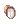 Monocle [1], Black Frame Glasses [1]
- Headgear Card: Essence of Evil INT 3, Isilla Card, Rata Card, Kathryne Keyron Card (best on +9 headgear)
- Lower Headgear: Rainbow Scarf
- Armor: Robe of Judgement
- Weapon: 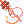 Mace of Judgement [2] or Empowered Mace of Judgement [1]
- Weapon Card: Zakudam Card
- Shield: Mad Bunny [1], Valkyrja's Shield [1], Bible of Promise Vol. 1 [1], Bible of Promise Vol. 2 [1]
- Shield Card: Thara Frog Card
- Garment: Shawl of Judgement
- Footgear: 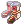 Shoes of Judgement
- Accessory: Pendant of Maelstrom [1], 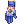 INT Glove [1], Pendant of Harmony, 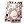 Buwaya Agimat Tattoo
- Accessory Card: Scaraba Card, Phen Card
Battle Bishop Gears
- Upper Headgear: 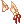 Fox Ear Ribbons [1], Necktie [1]
- Middle Headgear:
 Blush [1], Monocle [1], Black Frame Glasses [1], 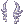 Ice Ear Wing
Blush [1], Monocle [1], Black Frame Glasses [1], 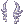 Ice Ear Wing
- Headgear Card:
- Phylla Card: Increase DEX and AGI, chance to increase Critical rate when physically attacking.
- Vanberk Card: Increase STR, chance to significantly increase Critical rate when physically attacking.
- Duneyrr Card: Increase ATK, chance to increase Perfect Dodge when physically attacking.
- Isilla Card: Increase INT, chance to autocast Suffragium on yourself and increase Flee when using magic attacks.
- Rata Card: Increase MATK, chance to reduce your Fixed Cast Time when using magic attacks.
- Essence of Evil INT 3: Increase INT and MATK, reduce STR.
- Headgear Card:
- Headgear set: Incubus Horn or 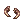 Succubus Horn + Demon Mask (purchasable in the Cash Shop)
- Lower Headgear: CD in Mouth
- Armor: Hero Judgement Shawl [1]
- Armor Card: Ancient Mimic Card (increase AGI according to your base LUK. You need 54, 72, or 90 LUK (multiples of 18) to gain the AGI bonus)
- Weapon: 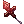 Bloody Cross
- Alternative Weapons: 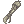 Robot's Mechanical Arm [2], 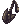 Carga Mace [2], 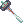 Veteran Hammer [2], 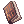 Ledger of Death [2], 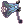 Thanatos Hammer [1], 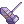 +9 or +12 Evil Slayer Destroyer Hammer [1], 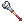 Quadrille, Quadrille [2].
- Weapon Card: Banaspaty Card, Zakudam Card, White Knight Card
- Shield: Thorny Buckler [1], Valkyrja's Shield [1], 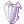 Platinum Shield
- Shield Card: Khalitzburg Knight Card, Thara Frog Card
- Garment: +7 or +9 Heroic Backpack [1]
- Footgear: +6 or higher Temporal Boots of Agility [1], +6 or higher Temporal Boots of Intelligence [1], +6 or higher Temporal Boots of Luck [1]
- First Enchant: Spell 9, or ASPD 3, or Critical 4
- Second Enchant: Runaway Magic, or Speed of Light, or Lucky Day
- Footgear Card:
- Matyr Card (increase AGI and MaxHP), Green Ferus Card (increase VIT and MaxHP), Green Cenere Card (increase MaxHP, chance to gradually recover HP when you receive physical or magical damage)
- Nightmare Verit Card (increase MATK%, best on +7 and +9 footgear)
- Outrageous Cookie Card (increase ATK and MATK every 2 refine levels, while reducing MaxHP)
- Firelock Soldier Card (increase STR, if the footgear is refined to +9, increase MaxHP and MaxSP)
- Accessory: Ring of Flame Lord, Glorious Ring, Bison Horn [1], Buffalo Horn [1], Alchemy Glove [1], 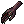 Cursed Hand [1]
- Accessory Card: Phen Card, Scaraba Card, Owl Duke + Owl Baron Card
- Click here to find out how to create
 Advanced Ring of Flame Lord
Advanced Ring of Flame Lord - Click here to find out how to create Buffalo Horn in NovaRO.
General Tactics
- Be sure you are fully buffed before starting the next round. Talk to the tournament healer NPC to remove debuffs, and restore your SP after buffing yourself.
- Use Impositio Manus, Expiatio and Duple Light if you’re going to melee the next competitor. For additional damage, use Aspersio on yourself and inflict Oratio on the target.
- You can hold Shift and use Odin’s Power on your opponent to reduce their defense, however beware as you will also increase the damage they do to you!
- Use Kyrie Eleison Lv 10 and/or Safety Wall Lv 10 when fighting competitors that use physical attacks.
- Use Assumptio Lv 5 when fighting competitors that use magic attacks, such as the Wizard, Kagerou, and Arch Bishop.
- Be careful when using Odin’s Power on yourself, as it reduces your DEF and MDEF.
Tournament Competitor Breakdown
- Round 1, Arhi (Male Novice): You can either Lex Aeterna > Adoramus him or just smack him, he’ll go down fast.
- Round 2, Dio Anemos (Male Mage): Dio likes spamming some low tier magic spells. Not really a threat and will succumb quickly to Lex Aeterna > Adoramus or some good ol’ pounding.
- Round 3, Geffen Shoplifter (Female Thief), or Geffen Bully (Male Blacksmith), or Geffen Gang Member (Male Assassin): None of them hit particularly hard. Feel free to kite them around with Lex Aeterna > Adoramus, or tank them with Kyrie Eleison + Safety Wall. Watch out for the Thief’s Stone Curse.
- Round 4, Faymont (Female Monk): Shield yourself from her Asura Strike with your Kyrie Eleison + Safety Wall. She can cast Decrease AGI on you but she’s not smart enough to recast Increase AGI on herself after you cast Decrease AGI on her. She doesn’t have ranged attacks so cast Lex Aeterna > Adoramus on her from a safe distance.
- Round 5, Ordre (Female Wizard): Use Assumptio on this round, as Ordre tends to use normal attacks after casting Storm Gust and freezing you. Cast Decrease AGI on her, and maintain a safe distance from her and her AoE magic. Lex Aeterna > Adoramus works well against her.
- Round 6, Blut Hase (Female Crusader): You must use Lex Aeterna > Adoramus on her, as she almost always keeps both Shield Reflect and Defender active. Keep Kyrie Eleison up on yourself and inflict Decrease AGI on her so she can’t catch up to you. Beware of her Shield Boomerang and Gloria Domini/Pressure, and watch out for your HP and SP.
- Round 7, Kuro Akuma (Kagerou): Cast Decrease AGI on him so you can maintain a safe distance from him, then use Lex Aeterna > Adoramus. Use Assumptio and Renovatio on yourself to weather through his magic attacks. Beware of his Soul Burn (it sounds like glass breaking when he uses this, when you hear this noise stay alert!) and be prepared to spam pots, or use a Ygg Berry/Ygg Seed, or a Token of Siegfried at a moment’s notice.
- Round 8, Ifodes (Male Rune Knight): He doesn’t have anything really dangerous up his sleeves. Keep Kyrie Eleison and Safety Wall up, try silencing him with Lex Divina, and be careful of his Spear Boomerang. You can either Lex Aeterna > Adoramus or smack him.
- Round 9, Licheniyes (Female Arch Bishop): She has similar buff and debuff skills as you but you can use the same tactic used for Ifodes. Cast Safety Wall + Assumptio on yourself, and Oratio + Lex Aeterna + Adoramus on her. She can use Holy Light to remove your Kyrie Eleison so watch out!
- Round 10, Odoric (Wanderer): Be on your guard for Odoric’s Tarot Card of Fate, as she can break your equipment with it, among other super nasty effects. Use Lex Divina Lv 10 to shut her up, or bring spare Judgement set if you plan to use Lex Aeterna + Adoramus on her. Otherwise bash her head in with your mace. However you choose to attack her, keep Safety Wall and Kyrie Eleison up, and watch out for her traps.
- Round 11, Ju (Male Sorcerer): Swap to your Battle Bishop gears for this fight and forget about Safety Wall, as Ju will nullify it with his Land Protector. Beware of his Soul Burn, and be prepared to spam pots or use Ygg Berry/Ygg Seed at a moment’s notice. If you’re wearing Hero Judgement Shawl, let it do its thing; otherwise keep Assumptio up on yourself. Mind your health and watch out for Ju’s Dispell. Keep bashing him in the head, he should burn to death in less than 3 minutes.
And that’s it! After defeating Ju you will have earned 70 Geffen Magic Tournament Coins in total. Unfortunately I have never been able to get through Round 12, where the opponent is either Dwight (Female Sorcerer), or Fay Kanavion (Female Alchemist) and her homunculus Alphonse. Opponents in Round 12 and Round 13 are Boss protocol, so they are immune to status debuffs. The difficulty level sky-rocketed in these rounds and they’re basically DPS-race rounds. I do not know if an AB can possibly win these rounds, although I’m inclined to believe that they can’t win… not with what’s currently available in the server, perhaps.
Stuff from official servers
These gears are not obtainable by normal means in NovaRO, therefore I can not recommend them in my guides. Some equipment will probably be implemented in a future update, some will probably never exist in the server for one reason or another (most likely for balancing reasons). Regardless, I’d like to talk about them here. Cuz it’s my profile page and I can do what I want with it.
DISCLAIMER: I do not speak Korean and Japanese. Item descriptions are derived from Google Translate. Links to the original item descriptions are provided.
Headgear
| Headgear Refine | Old Mitra [1] | |
|---|---|---|
| 0 | All Stats +1, MDEF +5. | Magnus Exorcismus damage +30% |
| 1 | ATK +4, MATK +2, Heal effectiveness +2% | |
| 2 | ATK +8, MATK +4, MaxHP & MaxSP +1%, Heal effectiveness +4% | Magnus Exorcismus damage +35% |
| 3 | ATK +12, MATK +6, Heal effectiveness +6% | |
| 4 | ATK +16, MATK +8, MaxHP & MaxSP +2%, Heal effectiveness +8% | Magnus Exorcismus damage +40% |
| 5 | ATK +20, MATK +10, Heal effectiveness +10% | |
| 6 | ATK +24, MATK +12, MaxHP & MaxSP +3%, Heal effectiveness +12%,
Judex damage +60%, Magnus Exorcismus damage +30% |
Magnus Exorcismus damage +45% |
| 7 | ATK +28, MATK +14, Heal effectiveness +14% | 5% chance to autocast Heal (at learned level)
when receiving physical/magical damage. |
| 8 | ATK +32, MATK +16, MaxHP & MaxSP +4%, Heal effectiveness +16%,
Judex damage +80%, Magnus Exorcismus damage +40% |
Magnus Exorcismus damage +50% |
| 9 | ATK +36, MATK +18, Heal effectiveness +18% | Fixed Cast Time -1%. |
| 10 | ATK +40, MATK +20, MaxHP & MaxSP +5%, Heal effectiveness +20%,
Judex damage +100%, Magnus Exorcismus damage +50% |
Magnus Exorcismus damage +55% |
| 11 | ATK +44, MATK +22, Heal effectiveness +22% | |
| 12 | ATK +48, MATK +24, MaxHP & MaxSP +6%, Heal effectiveness +24%,
Judex damage +120%, Magnus Exorcismus damage +60% |
Magnus Exorcismus damage +60% |
| 13 | ATK +52, MATK +26, Heal effectiveness +26% | |
| 14 | ATK +56, MATK +28, MaxHP & MaxSP +7%, Heal effectiveness +28%,
Judex damage +140%, Magnus Exorcismus damage +70% |
Magnus Exorcismus damage +65% |
| 15 | ATK +60, MATK +30, Heal effectiveness +30% | |
| 16 | ATK +64, MATK +32, MaxHP & MaxSP +8%, Heal effectiveness +32%,
Judex damage +160%, Magnus Exorcismus damage +80% |
Magnus Exorcismus damage +70% |
| 17 | ATK +68, MATK +34, Heal effectiveness +34% | |
| 18 | ATK +72, MATK +36, MaxHP & MaxSP +9%, Heal effectiveness +36%,
Judex damage +180%, Magnus Exorcismus damage +90% |
Magnus Exorcismus damage +75% |
| 19 | ATK +76, MATK +38, Heal effectiveness +38% | |
| 20 | ATK +80, MATK +40, MaxHP & MaxSP +10%, Heal effectiveness +40%,
Judex damage +200%, Magnus Exorcismus damage +100% |
Magnus Exorcismus damage +80% |
- Original description of Old Mitra.
- Probably first revealed after a maintenance in December 2013.
- Part of the Tomb of Honor update.
| Combo Piece | Description |
|---|---|
| Top Headgear. Weight 50. Required Level 50. For all jobs.
Heal effectiveness +3%. Uninterruptible casting (does not apply in WoE). If refined to +5 or higher, additional Heal effectiveness +6%. If refined to +7 or higher, additional Heal effectiveness +9%. If refined to +9 or higher, additional Heal effectiveness +12%. If equipped with Rosary's Necklace, Perfect Dodge +1 and additional Heal effectiveness +2% every refine level of the headgear. If equipped with Croce Staff, additional Heal effectiveness +4% every refine level of the weapon. | |
| Lower Headgear. Weight 30. Required Level 60. For all jobs.
Perfect Dodge +2, Heal effectiveness +3%. If equipped with Clergy Nurse Cap, Perfect Dodge +1 and additional Heal effectiveness +2% every refine level of the headgear. If equipped with Croce Staff, Perfect Dodge +2 every refine level of the weapon. | |
| 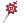 Croce Staff [1] | One handed staff. Holy Property. Weapon Lv 3. Required Level 50. Transcendent Acolyte only.
INT +4, MATK +175. Has 2% chance to autocast Blessing Lv 1 (or at user's learned level) on the user when casting Heal. |
- At +7 the Clergy Nurse Cap would boost healing effectiveness up to +18%, at +9 it will boost healing effectiveness up to +30%. Even a +7 Chibi Pope with Blush pales in comparison. Even if it is not upgraded, its uninterruptible cast effect would destroy the value of any other alternatives (Phen Card, Orleans Gown, etc) for Priests and Monks. On the other hand this headgear would increase the value of high refine Croce Staff, which is a Lv 3 weapon and is currently considered trash loot from Biolabs 3F. I think this equipment set is a good alternative to Chibi Pope + Blush and overupgraded Light of Recovery.
- The lower headgear Rosary's Necklace is part of a combo with Clergy Nurse Cap and Croce Staff. When all three are equipped together, they give a significant boost to healing effectiveness and adds a bit of Perfect Dodge. I can see this being particularly beneficial for classic healer ABs and even unorthodox ABs with low-medium INT and high LUK (e.g. Crit Battle Bishops perhaps?).
| Seraphim Combo | Description |
|---|---|
| Middle Headgear. Weight 30. Required Level 70. For all jobs.
STR +2. Every 8 Base INT, ATK +5, increase Variable Cast Time by 1%, increase Heal effectiveness by 1%. If Base INT is 108 or higher, additional ATK +50, increase Variable Cast Time by 1%, increase Heal effectiveness by an additional 5%. If Base INT is 120 or higher, additional ATK +125, increase Variable Cast Time by 1%, increase Heal effectiveness by an additional 10%. If equipped with Searphim Feather, every 8 Base INT, reduce Variable Cast Time by 1%. If Base INT is 108 or higher, reduce Variable Cast Time by an additional 4%, reduce damage received from Demi Human by 2%, increase recovery skills received from others and recovery item effectiveness by an additional 10%. If Base INT is 120 or higher, reduce Variable Cast Time by an additional 6%, reduce damage received from Demi Human by additional 4%, increase recovery skills received from others and recovery item effectiveness by an additional 15%. Reduce Coluceo Heal cast time by 100%. Reduce damage received from Demi Human by 2%. Increase recovery skills received from others and recovery item effectiveness by 5%. Immune to Bleeding and Chaos. | |
| Lower Headgear. Weight 30. Required Level 80. For all jobs.
Heal effectiveness +5%. If equipped with Seraphim Coronet, every 8 Base INT, reduce Variable Cast Time by 1%. If Base INT is 108 or higher, reduce Variable Cast Time by an additional 4%, reduce damage received from Demi Human by 2%, increase recovery skills received from others and recovery item effectiveness by an additional 10%. If Base INT is 120 or higher, reduce Variable Cast Time by an additional 6%, reduce damage received from Demi Human by additional 4%, increase recovery skills received from others and recovery item effectiveness by an additional 15%. Reduce Coluceo Heal cast time by 100%. Reduce damage received from Demi Human by 2%. Increase recovery skills received from others and recovery item effectiveness by 5%. Immune to Bleeding and Chaos. |
Weapon
- Original item description. This was revealed in December 2013 in jRO.
- Book type weapon. ATK 30, MATK 170, INT +2, DEX +2. Indestructible.
- Magnus Exorcismus damage +30%. Heal effectiveness, recovery skills received from others, and recovery item effectiveness +10%.
- Every 1 Base INT, increase Magnus Exorcismus damage by 1%, up to 120 Base INT.
- If refined, when receiving physical attack, has a chance to pierce 100% MDEF of the enemy for 1 second. Every refine level, increase duration of MDEF piercing effect by 1 second.
- If equipped with Spiritual Ring [1], reduce Magnus Exorcismus cast time by 25%.
This weapon combines the best qualities of Holy Stick and Exorcism Bible, with none of the annoying Turn Undead autocast ability, while increasing heal effectiveness and having temporary MDEF-piercing bonus. What’s even better, it has slots for cards which allows weapon + shield card combos, such as my favorite Nightmare Mimic + Nightmare Arclouse and Big Ben + Neo Punk card combo.
In jRO, it’s dropped by Undead monsters in the lower level of Nightmare Glast Heim that even Full Support (FS) ABs can kill. As a Lv 3 weapon, it should reach high refine levels easier than Lv 4 weapons.
Holy Stick Combos
| Headgear Refine |  Amistr Beret [1] Amistr Beret [1]
|
Weapon Refine | Holy Stick [1] |
|---|---|---|---|
| 4 | 20 MATK, 20 ATK | 4 | MATK +20, Adoramus damage +80% |
| 5 | 5 | ||
| 6 | 30 MATK, 30 ATK | 6 | MATK +30, Adoramus damage +90% |
| 7 | Cast time -10% | 7 | |
| 8 | 40 MATK, 40 ATK | 8 | MATK +40, Adoramus damage +120% |
| 9 | Holy property magic damage +10% | 9 | |
| 10 | 50 MATK, 50 ATK | 10 | MATK +50, Adoramus damage +150% |
| 11 | Fixed Cast Time -0.1 sec, MATK +3%, ATK +5% | 11 | |
| 12 | 60 MATK, 60 ATK, Fixed Cast time -0.2 sec | 12 | MATK +60, Adoramus damage +180% |
| 13 | Fixed Cast Time -0.3 sec | 13 | |
| 14 | 70 MATK, 70 ATK, Fixed Cast Time -0.4 sec | 14 | MATK +70, Adoramus damage +210% |
| 15 | Fixed Cast Time -0.5 sec | 15 | |
| 16 | 80 MATK, 80 ATK | 16 | MATK +80, Adoramus damage +240% |
| 17 | 17 | ||
| 18 | 90 MATK, 90 ATK | 18 | MATK +90, Adoramus damage +270% |
| 19 | 19 | ||
| 20 | 100 MATK, 100 ATK | 20 | MATK +100, Adoramus damage +300% |
| Footgear Refine | Weapon Refine | Holy Stick [1] | ||
|---|---|---|---|---|
| MATK +5% | 0 - 4 | MDEF +15, MaxHP & MaxSP +3%, MATK +2%,
Holy property magic damage +2%, Judex damage +30%. |
0 - 4 | Reduce cast time of Adoramus and Judex by 5% for every level of Oratio learned.
Increase Adoramus damage by 10% for every level of Lauda Agnus, Lauda Ramus, and Clearance learned (max +130%). |
| 5 | Additional MaxHP & MaxSP +7%, additional MATK +3%,
additional Holy property magic damage +3%. |
5 | ||
| 6 | 6 | |||
| Additional MATK +3% | 7 | Additional MaxHP & MaxSP +10%, additional MATK +5%,
additional Holy property magic damage +5%. |
7 | Magic damage against Demon & Undead race, and Shadow & Undead property enemies +30% |
| 8 | 8 | |||
| Additional MATK +2% | 9 | 9 | Additional magic damage against Demon & Undead race, and Shadow and Undead property enemies +20% |
- Weapon Card. Adoramus damage +20%.
- If compounded into a Lv 4 weapon, additional Adoramus damage +20%.
- If the weapon is upgraded to +10, additional Adoramus damage +20%.
Original item description. This was revealed after a maintenance in November 2015.
Best on Lv 4 weapons at +10 such as Holy Stick, Vicious Mind Rod, Vicious Mind Book (up to Adoramus damage +60%). Might also stack if two cards are slotted into +10 Crimson Rod/Bible/Mace of Judgement (up to Adoramus damage +80%) but will have to sacrifice MDEF piercing card combo.
 Arch Bishop Margaretha Card (MVP Card)
Arch Bishop Margaretha Card (MVP Card)
- Garment Card. Arch Bishop only. MaxHP +10%, Heal effectiveness +15%.
- If the wearer's base level is higher than 174, all stats +10.
- If compounded to a +10 garment, additional all stats +10.
- If equipped with True Margaretha Sorin Card, when using magic attacks there's a chance to transform into Margaretha Sorin for 6 seconds.
- While transformed, MATK +100.
Original item description. This was revealed after a maintenance in November 2015. Best on +10 Giant Snake Skin (or higher).
AB Shadow Gears
| Shadow Gear Piece | Description |
|---|---|
| 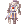 Priest Shadow Armor | Magnus Exorcismus damage +20%.
Every refine level, additional Magnus Exorcismus damage +5%. If equipped by Priest class, and equipped with Priest Shadow Shoes, MATK +3%, Magnus Exorcismus cast time -40%. |
| 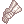 Arch Bishop Shadow Weapon | Required Lv 99, Arch Bishop only. Duple Light damage +20%.
Every refine level, additional Duple Light damage +5%. |
| 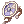 Arch Bishop Shadow Shield | Required Lv 99, Arch Bishop only. Adoramus damage +20%.
Every refine level, Adoramus damage +5%. If equipped with Arch Bishop Shadow Weapon, Duple Light damage +20%, Adoramus skill cooldown -1 second. If equipped with Acolyte Shadow Pendant, Acolyte Shadow Earring, Priest Shadow Armor, Priest Shadow Shoes, and Arch Bishop Shadow Weapon, all stats +10, MaxHP +5%, MaxSP +5%, pierce 50% MDEF of normal monsters. |
| Priest Shadow Shoes | Reduce SP cost of Kyrie Eleison and Lex Aeterna by 20%.
Every refine level, reduce SP consumption of Kyrie Eleison and Lex Aeterna by an additional 3%. |
| Acolyte Shadow Earring | Decrease SP cost of Heal by 20%.
Every refine level, decrease SP cost of Heal by an additional 3%. If equipped with Acolyte Shadow Pendant, MATK +1%, MaxSP +1%. If total refine level of the set is higher than 10, MATK +2%, MaxSP +2%. |
| Acolyte Shadow Pendant | Holy Light damage +50%.
Every refine level, Holy Light damage +10%. |
Other Shadow Gears
Tempest Shadow Earring + Tempest Shadow Pendant
- Tempest Shadow Earring description and Tempest Shadow Pendant description.
- Pierces 5% MDEF of normal monsters. Increase MDEF piercing effect according to refine level.
- Set with racial magic shadow weapons (Item ID 24170 ~ 24179).
- If total refine level of Tempest Shadow accessories and magic shadow weapon reaches 25 or higher, completely ignores MDEF of the related monster race.
- Original item description
- Enables Heal Lv 1. Restore 50 SP per refine level whenever the wearer casts Heal (?).
- Shadow Gears with IDs 24120 - 24125 are also Heal-related.
Shield
- Original item description
- This item was revealed in jRO, on November 2013.
- Heal, Sanctuary, Potion Pitcher, Highness Heal, and Coluceo Heal effectiveness +10%.
- If equipped with Angelic Ring, additional healing effectiveness +10%.
Footgear
- Original item description
- This was revealed in June 2014 in jRO.
- Footgear. Healing effectiveness +10%. Every refine level of Medical Boots reduces the SP cost of Coluceo Heal by 5 SP. Every 2 refine levels, healing effectiveness +2%. If equipped with Light of Recovery, every refine level of Light of Recovery [1] reduces SP cost of Heal by 6 SP, Coluceo Heal by 10 SP, and Highness Heal by 14 SP. If equipped with
 Benevolent Guardian [1], healing effectiveness +3%, every refine level of Benevolent Guardian increases healing effectiveness by 2%.
Benevolent Guardian [1], healing effectiveness +3%, every refine level of Benevolent Guardian increases healing effectiveness by 2%. 5920,Medical_Boots,Medical Boots,4,0,,300,,10,,0,0xFFFFFFFF,63,2,64,,10,1,,{ [email protected] = getrefine(); bonus bHealPower,10+(([email protected]/2) * 2); bonus2 bSkillUseSP,"AB_CHEAL",([email protected] * 5); },{},{}- Here’s a question; would your AB sacrifice Temporal Boots (and by extension, the MaxHP and MaxSP bonus they give if equipped with Faceworm Skin) if this was obtainable? This footgear is part of a set with Light of Recovery and Benevolent Guardian, offsetting the huge SP cost of overupgraded Light of Recovery while increasing heal effectiveness. If I was a pure healer/tank AB, I’d most likely get this instead of Temporal DEX/VIT Boots for the juicy heal bonus. I think sacrificing a footgear card would be worth the healing effectiveness and efficiency that Medical Boots can provide. If this was obtainable, I’d strongly recommend this for FS ABs.
Accessory
- Original item description
- This was revealed in March 2016 in jRO.
- Accessory. LUK +2, Perfect Dodge +5. Skill SP cost -5%. Increase HP recovered by Heal, Sanctuary, Highness Heal, Coluceo Heal, and Potion Pitcher by 15%. Increase HP recovered when another player uses Heal, Sanctuary, Highness Heal, Coluceo Heal, and Potion Pitcher on you by 15%. HP recovered from items +15%.
- If enchanted with
 Archbishop Lv 1, additional LUK +2, Perfect Dodge +5, further reduce Skill SP cost by 5%, increase HP recovered by Heal, Sanctuary, Highness Heal, Coluceo Heal, and Potion Pitcher by an additional 3%, Highness Heal cast time -100%.
Archbishop Lv 1, additional LUK +2, Perfect Dodge +5, further reduce Skill SP cost by 5%, increase HP recovered by Heal, Sanctuary, Highness Heal, Coluceo Heal, and Potion Pitcher by an additional 3%, Highness Heal cast time -100%. - If enchanted with Archbishop Lv 2, additional LUK +2, Perfect Dodge +5, further reduce Skill SP cost by 5%, increase HP recovered by Heal, Sanctuary, Highness Heal, Coluceo Heal, and Potion Pitcher by an additional 3%, Highness Heal cooldown -1 second.
- If enchanted with
 Catholic Lv 1, additional LUK +2, Perfect Dodge +5, further reduce Skill SP cost by 5%, increase HP recovered by Heal, Sanctuary, Highness Heal, Coluceo Heal, and Potion Pitcher by an additional 3%, Coluceo Heal cast time -100%, Coluceo Heal SP cost -20.
Catholic Lv 1, additional LUK +2, Perfect Dodge +5, further reduce Skill SP cost by 5%, increase HP recovered by Heal, Sanctuary, Highness Heal, Coluceo Heal, and Potion Pitcher by an additional 3%, Coluceo Heal cast time -100%, Coluceo Heal SP cost -20. - If enchanted with, Cure Lv 1, additional LUK +2, Perfect Dodge +5, further reduce Skill SP cost by 5%, increase HP recovered by Heal, Sanctuary, Highness Heal, Coluceo Heal, and Potion Pitcher by an additional 3%, Epiclesis cooldown -10 seconds, Epiclesis SP cost -100.